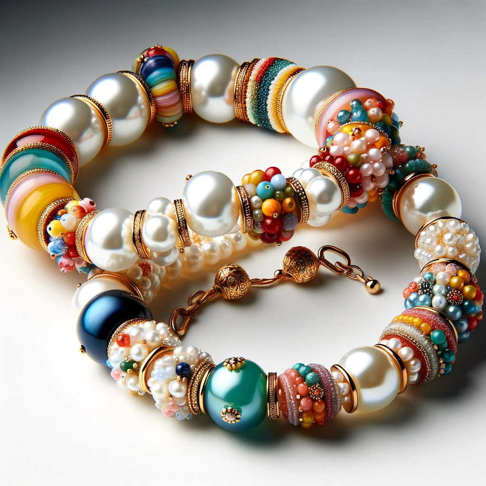
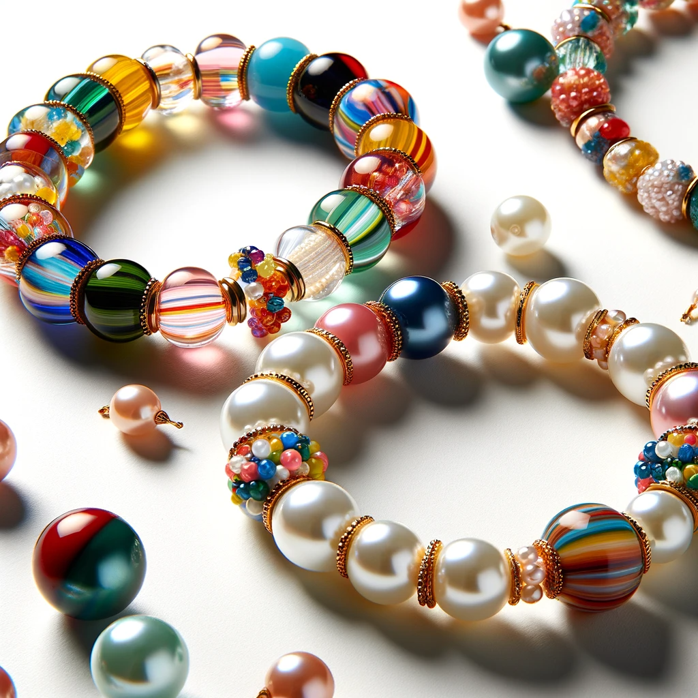

Bracelets crafted by an
11-year-old girl embody the purest form
of
creativity and passion.
Each
bracelet, meticulously strung together with vibrant beads, is a testament to her youthful
enthusiasm
and
her blossoming artistic talent. The choice of colors and patterns in each bracelet is not just a
random
selection but a reflection of her vivid imagination and inner joy. These bracelets are more than
just
accessories; they are wearable pieces of art, infused with a sense of playfulness and a
boundless
zest
for life.
What makes these bead
bracelets truly special is the love and care
woven into
every knot and bead.
With
each bracelet she creates, the young artist pours her heart into her work, ensuring that every
piece
carries a part of her spirit. These bracelets are not merely products of a hobby; they are
symbols
of
love, crafted with the hopes of spreading happiness and inspiration. Wearing one of her
creations is
like carrying a small beacon of joy and a reminder of the pure, unadulterated creativity that
flourishes
in the heart of a child.
